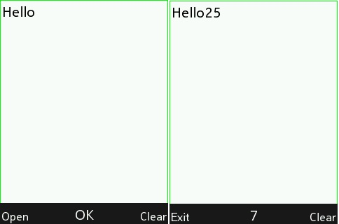

Basic app to edit text file for MRE platform mobile phone (including Nokia S30+). KEY_OK show current cursor position. If exists "mre_editor.txt" on same directory as app "mre_editor.vxp" (if change vxp name, change text file name to) app load text file automaticaly on start. For using with Nokia mobile phone, app must be signed with IMSI (your SIM card) code. https://vxpatch.luxferre.top. Application file - "mre_editor.vxp".
